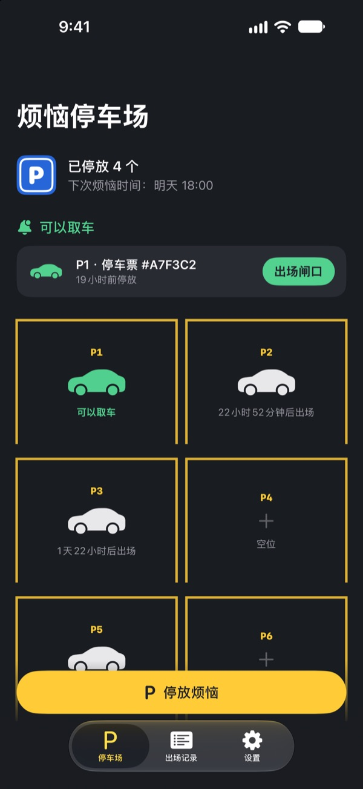
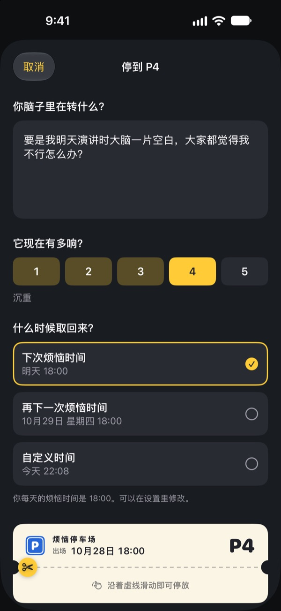
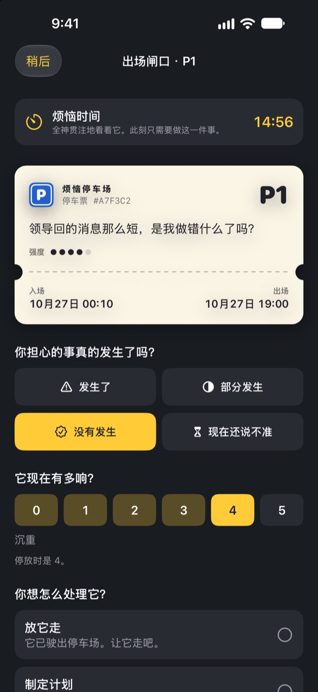
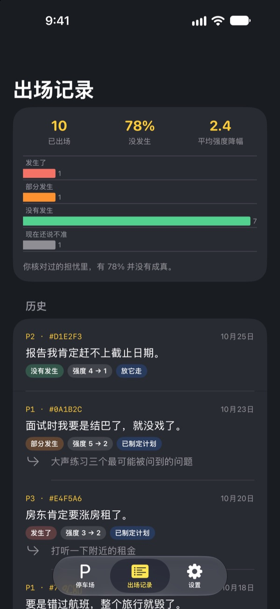

烦恼，
先停在这里
把睡前在脑子里打转的烦恼写在停车票上交给我们。到了烦恼时间再还给你。在那之前，你不用一直带着它。
所有功能免费，没有广告，也不用注册账号。

停一个烦恼试试
可以直接用示例，也可以写下你此刻正在想的事。停好后它会变模糊，到烦恼时间再拿出来看。
一关灯，脑子就开始转？
刚躺下，白天说过的一句话、明天的会、还没回的消息，就一个接一个冒出来。越告诉自己别想，声音越大。烦恼停车场不要求你硬把烦恼赶走。把它写下来，给它一个车位，再专门留出时间去面对。
写下来，就从脑子里放下了
按它在脑子里听起来的样子写下来，再选它此刻有多响，从 1 到 5。撕下停车票，烦恼就模糊地留在停车场里。
要是它又绕回来，就告诉它：你已经有车位了。会轮到你的，但不是现在。

烦恼时间，只面对 15 分钟
每天到了烦恼时间就会收到提醒。在出场闸口重新读一遍，看看它是不是真的发生了，现在还有多响。
然后放下它，把它变成一个小小的下一步，或者再停到下一个烦恼时间。

看看你的烦恼有几次成真
出场的烦恼越多，出场记录越能清楚地显示真正发生的比例，以及强度降了多少。
烦恼总爱把未来想得比实际更糟。记录得越多，你就越不容易相信下一个烦恼。

三步就能开始
- 1
选好烦恼时间
第一次打开时，选一个每天面对烦恼的时间。之后可以在设置里改。
- 2
停一个真实的烦恼
马上停好你此刻的烦恼，感受一下停车前后强度有什么变化。
- 3
允许取车提醒
到了烦恼时间，会收到一条只写着车位号的提醒。
为什么有用
- 只在固定时间烦恼
- 把烦恼挪到每天一段短暂烦恼时间的人，烦恼的时间变少了，焦虑和睡眠问题也减轻了。（Borkovec 等, 1983；McGowan & Behar, 2013）
- 写下来，才能放下
- 制定具体计划后，没做完的事较少闯进思绪；睡前花 5 分钟写下待办事项的人入睡更快。（Masicampo & Baumeister, 2011；Scullin 等, 2018）
- 确认是否真的发生
- 长期容易烦恼的人记录自己的烦恼后发现，91% 并没有真的发生。（LaFreniere & Newman, 2020）
烦恼停车场基于“烦恼推迟”，这是认知行为疗法（CBT）中被研究了几十年的技术。
所有功能都免费
免费
- 车位不限数量
- 每天的烦恼时间提醒，自选出场时间
- 出场闸口和出场记录
- 出场洞察：真正发生的比例，强度的变化
打赏（随意）
- 如果觉得有帮助，可以给开发者一点小小的打赏
- 小、中、大三档任选
打赏不会解锁任何功能。不打赏也能使用全部功能。
没有广告、账号、服务器和分析工具。你写下的一切都只保存在你的 iPhone 上。
常见问题
怎么修改烦恼时间？
在设置标签页的烦恼时间里修改。新时间会用于之后停放的烦恼，已经停着的烦恼保持原来的出场时间。
收不到取车提醒。
请检查设置标签页里的通知一项。如果显示通知已关闭，点“打开 iOS 设置”把通知打开。开着专注模式或勿扰模式时，提醒可能会静默送达。就算没收到提醒，到点的烦恼也会在停车场里显示为可以出场。
通知里会出现我的烦恼内容吗？
不会。通知里只有车位号，比如“P3 可以出场了”。烦恼内容只有打开 App 进入出场闸口时才看得到。
能在烦恼时间之前先看吗？
在停车场里点那辆车，选“现在就送去出场闸口”。不过推迟的效果在于等待，大多数烦恼到了烦恼时间都会显得小一些。
记录能转到新 iPhone 上吗？
所有记录只保存在 iPhone 里，没有账号和同步功能。用 iCloud 或电脑备份恢复新 iPhone，或使用快速开始，记录会和其他 App 的数据一起转过去。
想删除记录怎么办？
在出场记录标签页里，把某一条向左滑就能删除。删除 App 会同时清除所有记录。
这是心理治疗吗？
烦恼停车场是一款基于 CBT“烦恼推迟”的自助工具。它不是医疗器械，也不能代替专业的诊断或治疗。
如果真的很难受怎么办？
如果烦恼占据了你的生活，或者你有伤害自己的念头，请不要一个人扛着。请立即拨打当地的紧急电话，或联系你所在地区的心理援助热线，也可以告诉身边信任的家人或朋友，请他们陪着你。
有问题或建议，欢迎写信到 leeo@kakao.com。